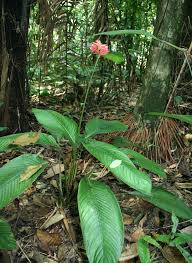

Marantaceae
Prayer Plant Family / Arrowroot Family
Marantaceae, commonly known as the prayer plant or arrowroot family, is a family of flowering plants in the order Zingiberales (Monocots). It comprises rhizomatous perennial herbs found predominantly in the understory of tropical forests worldwide, with centers of diversity in the Neotropics, Africa, and Asia. The family is renowned for its often ornately patterned leaves that exhibit daily "sleep movements" (nyctinasty) mediated by a specialized organ called the pulvinus, and for its highly complex, asymmetrical flowers.
Overview
Marantaceae includes about 30 genera and around 550 species of herbaceous perennials growing from rhizomes or tubers. They are characteristic inhabitants of the shaded floor of tropical rainforests, often preferring moist or wet conditions. The family is easily recognized by its distinctive leaves, which possess a specialized swelling called a pulvinus at the junction of the petiole and blade (or top of the sheath). This pulvinus controls turgor pressure, allowing the leaves to change orientation, typically folding upwards or inwards at night and spreading horizontally during the day – resembling hands folded in prayer, hence the common name "prayer plant" for many species.
The flowers of Marantaceae are among the most complex and structurally specialized in the angiosperms. They are highly asymmetrical and possess only one fertile stamen (bearing only half an anther). The other stamens are modified into petal-like structures (staminodes) that play roles in attracting pollinators and in an intricate, often explosive, pollination mechanism. Many species are popular houseplants (Maranta, Calathea, Goeppertia, Stromanthe, Ctenanthe) grown for their beautiful foliage. Maranta arundinacea is cultivated for its starchy rhizomes, the source of arrowroot starch.
Quick Facts
- Scientific Name: Marantaceae
- Common Name: Prayer Plant Family, Arrowroot Family
- Number of Genera: Approximately 30
- Number of Species: Approximately 550
- Distribution: Pantropical (Neotropics, Africa, Asia).
- Habit: Rhizomatous perennial herbs; tropical forest understory.
- Evolutionary Group: Monocots - Commelinids - Zingiberales
Key Characteristics
Growth Form and Habit
Perennial herbs growing from underground rhizomes or tubers. Stems can be short with leaves appearing basal, or elongated and sometimes branched.
Leaves
Leaves are simple, entire, often large and strikingly patterned or colored (especially abaxially). They are arranged spirally or distichously (in two ranks) and consist of a basal sheath, a distinct petiole (sometimes absent), and a blade with a prominent midrib and parallel side veins (monocot venation). A key diagnostic feature is the presence of a pulvinus, a swollen, joint-like structure at the apex of the petiole or top of the sheath, responsible for the characteristic nyctinastic (sleep) movements of the leaves.
Inflorescence
Inflorescences are variable, often complex spikes, panicles, or head-like structures, either terminal on leafy shoots or arising separately from the rhizome. They are usually subtended by conspicuous bracts. Flowers within the inflorescence are typically borne in mirrored pairs (one flower the mirror image of the other) within each bract.
Flowers
Flowers are highly modified, strikingly asymmetrical (bilaterally symmetrical but left-right asymmetric), bisexual, and 3-merous. Their structure is complex and unique:
- Perianth: Differentiated into calyx and corolla.
- Calyx: 3 free sepals, usually herbaceous and inconspicuous.
- Corolla: 3 petals, fused at the base into a tube, usually unequal in size, often thin and pale colored (white, pink, lilac).
- Androecium/Staminodes: Extremely modified. Only one fertile stamen is present, and it bears only a single functional pollen sac (half-anther or monothecal anther). The remaining stamens (typically 2-4) are transformed into sterile, often petal-like structures called staminodes. These staminodes have specific forms and functions in the pollination mechanism and include structures like outer staminodes, a fleshy 'callose' staminode, and a 'hooded' staminode that often encloses the style.
- Gynoecium: The ovary is inferior, composed of 3 fused carpels. However, typically only one locule develops and is fertile, containing a single basal ovule (the other two locules are usually sterile and reduced). The style is slender and complex, often held under tension by the hooded staminode. When triggered by a pollinator, the style springs forward, releasing pollen (often deposited onto the style itself from the anther earlier) onto the visitor while simultaneously positioning the stigma for pollen reception.
Fruits and Seeds
The fruit is usually a loculicidal capsule (splitting into the fertile locule), or sometimes fleshy and berry-like. It typically contains only one (rarely up to 3) seed. Seeds are often hard, rounded or angled, and frequently possess a conspicuous, often brightly colored, fleshy aril, which attracts dispersal agents like ants or birds.
Field Identification
Identifying Marantaceae relies heavily on recognizing the unique leaf structure and the highly specialized flowers:
Primary Identification Features
- Presence of Pulvinus: Look for the distinct swelling at the top of the petiole or sheath, enabling leaf movement (often visible as a change in texture or color).
- Rhizomatous Herb Habit: Plants grow from underground rhizomes, lacking true woody stems.
- Asymmetrical Flowers: Flowers are highly irregular and complex, unlike typical radially or bilaterally symmetrical flowers.
- Single Fertile Stamen (with half-anther): Requires close examination, but only one structure bears pollen (in a single sac).
- Petaloid Staminodes: Several petal-like structures are present in the flower, derived from sterile stamens.
- Inferior Ovary: Ovary located below the attachment of perianth parts.
- Seeds with Aril (often): Check fruits or dispersed seeds for a fleshy, often colorful appendage.
- Habitat and Range: Understory of tropical forests worldwide.
Secondary Identification Features
- Patterned Leaves: Many species have intricate patterns or colors on their leaves.
- Flowers in Pairs: Flowers often occur in mirrored pairs within bracts.
- Capsule or Berry-like Fruit: Usually containing only one seed.
Seasonal Identification Tips
- Year-round: The distinctive leaves with pulvini are usually present year-round. Leaf patterns are helpful.
- Flowering Season: Varies by species and location. Flowers are essential for confirming family identity due to their unique structure, but individual flowers can be short-lived.
- Fruiting Season: Capsules or berries develop after flowering. Arillate seeds may be found on the ground after dispersal.
Common Confusion Points
Marantaceae leaves resemble other Zingiberales, but flowers and pulvini are distinct:
- Zingiberaceae (Ginger Family): Also rhizomatous herbs with large leaves, but lack a prominent pulvinus for leaf movement. Flowers are zygomorphic but structurally different (usually 1 fertile stamen with full anther, distinct labellum formed from staminodes). Often aromatic.
- Costaceae (Spiral Ginger Family): Leaves often arranged spirally, lack pulvinus. Flowers zygomorphic, structurally different.
- Cannaceae (Canna Lily Family): Leaves lack pulvinus. Flowers are asymmetrical but with large petaloid staminodes forming the showy part, different structure from Marantaceae.
- Heliconiaceae / Musaceae / Strelitziaceae / Lowiaceae: All lack the combination of a distinct pulvinus enabling nyctinasty and the highly complex, asymmetrical flower structure with only one half-fertile stamen found in Marantaceae.
Field Guide Quick Reference
Look For:
- Rhizomatous herb (Monocot)
- Leaf with distinct pulvinus (causes movement)
- Often patterned leaves
- Highly asymmetrical flowers
- 1 fertile stamen (with half-anther)
- Petal-like staminodes
- Inferior ovary (usually 1 fertile locule)
- Capsule or berry-like fruit
- Seed often with fleshy aril
- Tropical forest understory
Key Variations:
- Leaf patterns and colors
- Inflorescence structure
- Staminode shapes and colors
- Fruit type (capsule vs. berry-like)
- Aril color
Notable Examples
Many members of this family are popular houseplants known for their striking foliage:

Maranta leuconeura
Prayer Plant
Native to Brazil, this is the classic prayer plant, widely cultivated as a houseplant. It has oval leaves with intricate patterns (e.g., 'Herringbone' variety) that fold upwards conspicuously at night. Flowers are small and whitish.

Goeppertia spp. (incl. many former Calathea)
Calatheas, Peacock Plants, Zebra Plants
This large genus (incorporating most species formerly in Calathea) contains numerous popular houseplants prized for their incredibly diverse and beautiful leaf patterns, textures, and colors (e.g., G. orbifolia, G. makoyana, G. zebrina). They also exhibit nyctinastic leaf movements.

Stromanthe spp.
(Stromanthe)
A genus native to the Neotropics. Stromanthe sanguinea, particularly the cultivar 'Triostar' or 'Tricolor', is a popular houseplant with striking leaves variegated in green, white, and pink/red, with deep red undersides.

Maranta arundinacea
Arrowroot
Native to the American tropics, this species is cultivated for its starchy rhizomes, which are processed to produce arrowroot starch, a easily digestible thickening agent used in cooking.

Thalia spp.
Powdery Alligator-flag, Water Canna
A genus of aquatic or marginal aquatic herbs found in the Americas and Africa. Species like T. dealbata are sometimes grown as ornamental pond plants, with tall stems bearing leaves and panicles of purple flowers.
Phylogeny and Classification
Marantaceae is a well-defined family within the Monocot order Zingiberales, belonging to the Commelinid clade. It is characterized by shared derived traits (synapomorphies) like the pulvinate leaves enabling nyctinasty and the highly complex, asymmetrical flower structure with unique staminode arrangements and pollination mechanisms.
Within Zingiberales, Marantaceae is most closely related to Cannaceae (Canna Lily family). Together, these two families form a sister group to the clade containing Costaceae (Spiral Gingers) and Zingiberaceae (True Gingers). This entire group represents the "core" Zingiberales, distinguished from the earlier-diverging lineages like Musaceae, Strelitziaceae, Heliconiaceae, and Lowiaceae.
Position in Plant Phylogeny
- Kingdom: Plantae
- Clade: Angiosperms (Flowering plants)
- Clade: Monocots
- Clade: Commelinids
- Order: Zingiberales
- Family: Marantaceae
Evolutionary Significance
Marantaceae is evolutionarily significant for:
- Nyctinastic leaf movement: The well-developed pulvinus and associated "sleep movements" are a striking example of plant behavior adapting to light conditions or potentially reducing herbivory/water loss at night.
- Extreme floral asymmetry and complexity: Represents perhaps the most complex floral structure among angiosperms, showcasing extreme modification of basic floral parts (especially staminodes) for specialized pollination.
- Explosive pollination mechanism: The tensioned style and triggered pollen release is a highly specialized adaptation for precise pollen placement on pollinators.
- Aril evolution: The frequent presence of brightly colored arils highlights adaptations for seed dispersal by animals (ants, birds).
- Diversification in tropical understories: Represents a successful radiation of herbaceous plants in shaded, moist forest floor environments globally.